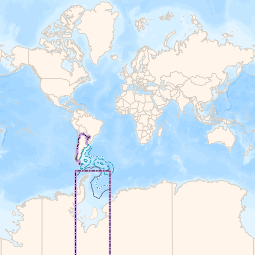
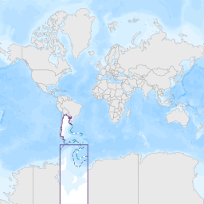

Inicio

Bienvenidos al mapa
de espacios verdes del
COPADE
La capa que se muestra en este momento representa a los espacios verdes de la provincia de Neuquen y esta coloreada segun la clasificacion de cada uno.
Para colorear las capas segun su capacidad de
absorcion ,
porcentaje de
arbolado o su
superficie en
m2, utilice el menu lateral en la seccion
clasificacion

Para mover el mapa a una localidad especifica, puede
elegir cualquiera de la lista en la pestaña de localidades
Clasificaciones
Selecione una clasificacion para colorear las capas segun la escala que se muestra en el mapa.
Absorcion
Porcentaje de Absorcion de Agua en funcion de los m2
Arbolado
Porcentaje de Arbolado en funcion de los m2
Superficie
Porcentaje de Absorcion de Agua en funcion de los m2
Tipo de Espacios
Clasificacion segun el tipo de espacio verde
Acerca de
Este visor ha sido desarrollado por el equipo de la Direccion general de Informacion Territorial, dependiente de la Direccion Provincial de Planificacion Territorial que forma parte de COPADE.
El objetivo de este desarollo es poder brindar a la comunidad una herramienta para la visualizacion de datos de relevancia y aportar una fuente de datos confiable y actualizada con respecto los espacios verdes con los que cuentan las localidades de nuestra provincia.

Localidades
Clickee la localidad que desee localizar. El mapa se movera a donde haya selecionado.
Cambiar mapa base
Selecione una mapa base para mostrar en el visor, los mapas
mas oscuros pueden mejorar el contraste pero dar menos
visibilidad a los detalles.
Todos los mapas de esta web usan los mapas del IGN
Argenmap.
-
Mapa comun
 -
Mapa topografico
 -
Mapa oscuro

-
Mapa gris